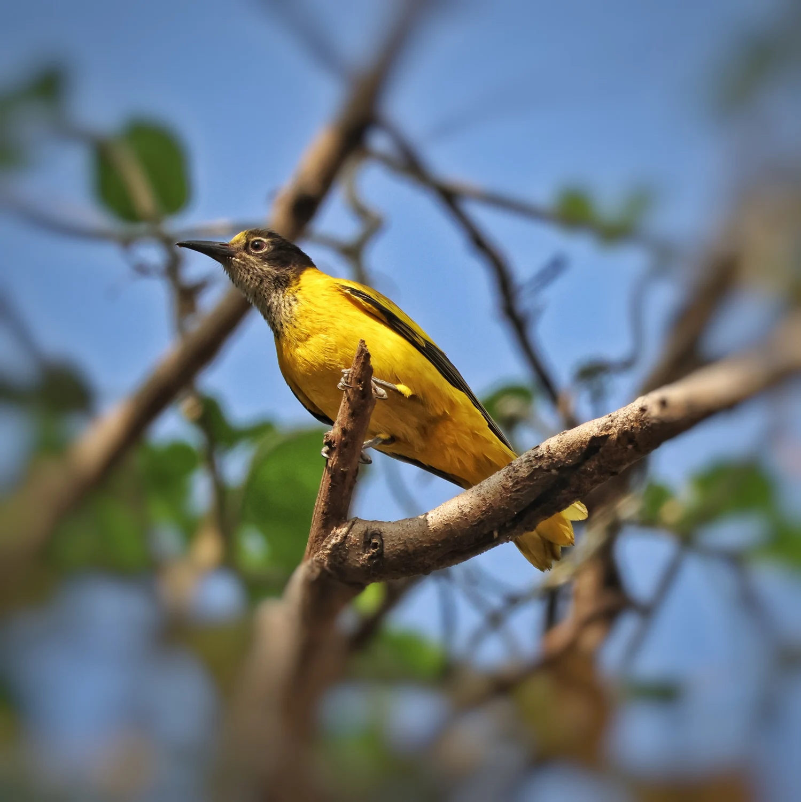

Call or WhatsApp +91 9810188505.

info@kashifyameenbirdwatcher.com
Based in Laxmi Nagar, Delhi, India. Meeting points are arranged for each tour.
Choose either channel. Your message opens in your own app for review and sending.
Sending opens WhatsApp. This is not a confirmed booking.